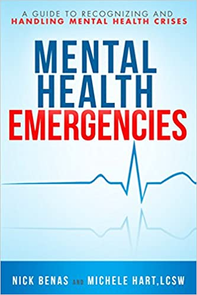
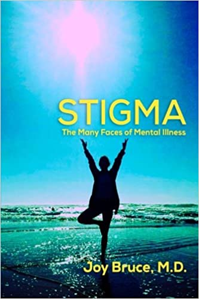
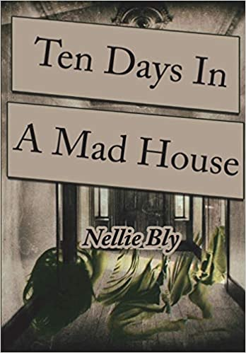
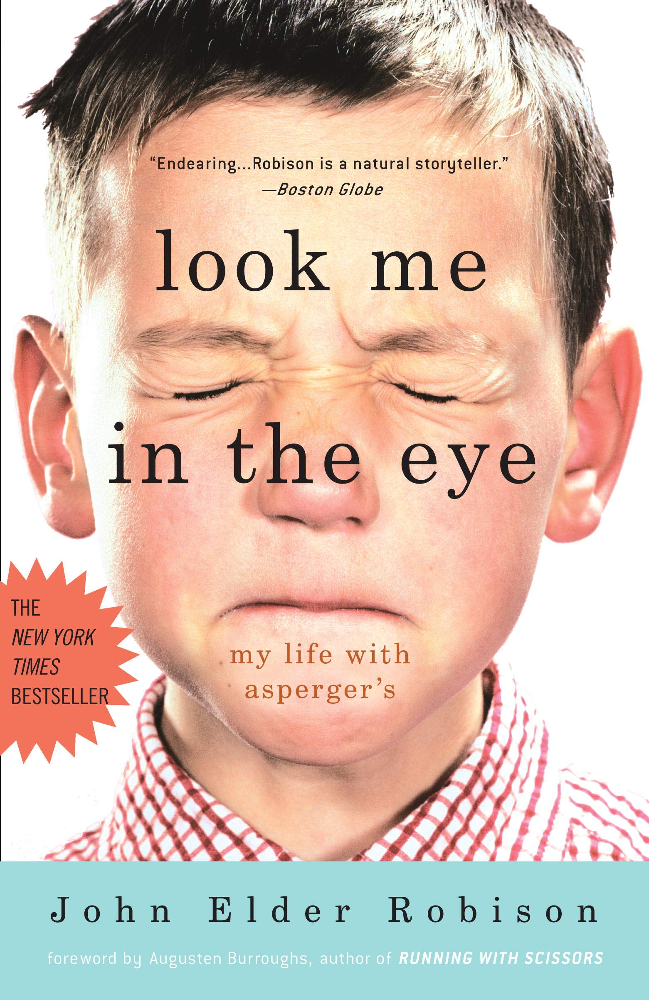

Mental Health Emergencies: A Guide to Recognizing and Handling Mental Health Crises
Author: Nick Benas and Michele Hart

Stigma: The Many Faces of Mental Illness
Author: Joy Bruce M.D.

Ten Days in a Mad-House
Author: Nellie Bly

Look Me in the Eye: My Life with Asperger’s
Author: John Elder Robison